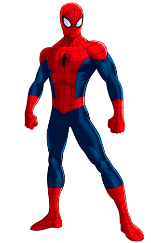
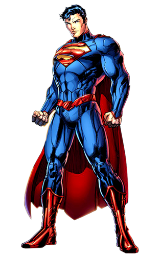

SUPERHERO INDEX
SCROLL & CHOOSE A SUPERHERO

BATMAN

THOR

SPIDERMAN

CAPTAIN AMERICA

A family outing to the cinema ended in tragedy for young Bruce Wayne. Walking homeward, Bruce, his father, Thomas, and mother, Martha, accidentally ventured into Gotham City's notorious "Crime Alley" and were accosted by a mugger. Not content merely to rob the wealthy family, the hoodlum - whose identity was "never determined" - shot Dr. Thomas and Martha Wayne dead before fleeing into the darkness. As he knelt beside his parent's bodies, Bruce swore to avenge them. After the police arrived, Bruce was comforted by Dr. Leslie THompkins. Dr. Thompkins and Alfred Pennyworth helped arrange matters so that Gotham's Social Services would not take Bruce into care. In this way, both Dr. Thompkins and Alfred enabled Bruce to realize his dream of becoming a crusader against crime.
At age 14, Bruce embarked on a journey that took him to every continent as he sought to learn all the skills he would need to keep his vow. He studied criminology, forensics, and criminal psychology, and learned from manhunters and martial artists, mastering every fighting style. In time, Bruce forged himself into a living weapon to wage war on crime and injustice. On his return to Gotham, Bruce stalked street thugs as a plainclothes vigilante. Beaten by the very people he intended to protect, he barely survived his first night out. As he sat bleeding in his study at Wayne Manor Bruce knew that he had to first strike fear in the hearts of his foes. Just then, a bat crashed through the study window, giving Bruce the inspiration he needed.